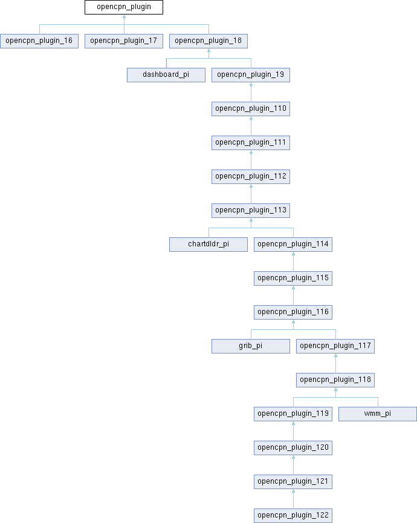

- Generated on Wed Jun 17 2026 14:02:12 for OpenCPN Partial API docs by
 1.9.8
1.9.8
|
OpenCPN Partial API docs
|
Base class for OpenCPN plugins. More...
#include <ocpn_plugin.h>

Public Member Functions | |
| opencpn_plugin (void *pmgr) | |
| virtual int | Init (void) |
| Initialize the plugin and declare its capabilities. | |
| virtual bool | DeInit (void) |
| Clean up plugin resources. | |
| virtual int | GetAPIVersionMajor () |
| Returns the major version number of the plugin API that this plugin supports. | |
| virtual int | GetAPIVersionMinor () |
| Returns the minor version number of the plugin API that this plugin supports. | |
| virtual int | GetPlugInVersionMajor () |
| Returns the major version number of the plugin itself. | |
| virtual int | GetPlugInVersionMinor () |
| Returns the minor version number of the plugin itself. | |
| virtual wxBitmap * | GetPlugInBitmap () |
| Get the plugin's icon bitmap. | |
| virtual wxString | GetCommonName () |
| Get the plugin's common (short) name. | |
| virtual wxString | GetShortDescription () |
| Get a brief description of the plugin. | |
| virtual wxString | GetLongDescription () |
| Get detailed plugin information. | |
| virtual void | SetDefaults (void) |
| Sets plugin default options. | |
| virtual int | GetToolbarToolCount (void) |
| Returns the number of toolbar tools this plugin provides. | |
| virtual int | GetToolboxPanelCount (void) |
| Returns the number of preference pages this plugin provides. | |
| virtual void | SetupToolboxPanel (int page_sel, wxNotebook *pnotebook) |
| Creates a plugin preferences page. | |
| virtual void | OnCloseToolboxPanel (int page_sel, int ok_apply_cancel) |
| Handles preference page closure. | |
| virtual void | ShowPreferencesDialog (wxWindow *parent) |
| Shows the plugin preferences dialog. | |
| virtual bool | RenderOverlay (wxMemoryDC *pmdc, PlugIn_ViewPort *vp) |
| Render plugin overlay graphics using standard device context. | |
| virtual void | SetCursorLatLon (double lat, double lon) |
| Receives cursor lat/lon position updates. | |
| virtual void | SetCurrentViewPort (PlugIn_ViewPort &vp) |
| Notifies plugin of viewport changes. | |
| virtual void | SetPositionFix (PlugIn_Position_Fix &pfix) |
| Updates plugin with current position fix data at regular intervals. | |
| virtual void | SetNMEASentence (wxString &sentence) |
| Receive all NMEA 0183 sentences from OpenCPN. | |
| virtual void | SetAISSentence (wxString &sentence) |
| Receive all AIS sentences from OpenCPN. | |
| virtual void | ProcessParentResize (int x, int y) |
| Handles parent window resize events. | |
| virtual void | SetColorScheme (PI_ColorScheme cs) |
| Updates plugin color scheme. | |
| virtual void | OnToolbarToolCallback (int id) |
| Handles toolbar tool clicks. | |
| virtual void | OnContextMenuItemCallback (int id) |
| Handles context menu item selection. | |
| virtual void | UpdateAuiStatus (void) |
| Updates AUI manager status. | |
| virtual wxArrayString | GetDynamicChartClassNameArray (void) |
| Returns array of dynamically loaded chart class names. | |
Base class for OpenCPN plugins.
All plugins must inherit from this class and implement the required virtual methods. The class provides the interface between plugins and the OpenCPN core application.
Two types of methods exist:
PlugIns must implement optional method overrides consistent with their declared capabilities flag as returned by Init().
Definition at line 1308 of file ocpn_plugin.h.
|
inline |
Definition at line 1310 of file ocpn_plugin.h.
|
virtual |
Definition at line 79 of file ocpn_plugin.cpp.
|
virtual |
Clean up plugin resources.
Called by OpenCPN when plugin is disabled. Shall release any resources allocated by the plugin. Good place to persist plugin configuration.
Reimplemented in chartdldr_pi, dashboard_pi, grib_pi, and wmm_pi.
Definition at line 83 of file ocpn_plugin.cpp.
|
virtual |
Returns the major version number of the plugin API that this plugin supports.
This method must be implemented by all plugins to declare compatibility with a specific major version of the OpenCPN plugin API.
Reimplemented in chartdldr_pi, dashboard_pi, grib_pi, and wmm_pi.
Definition at line 85 of file ocpn_plugin.cpp.
|
virtual |
Returns the minor version number of the plugin API that this plugin supports.
This method must be implemented by all plugins to declare compatibility with a specific minor version of the OpenCPN plugin API.
Reimplemented in chartdldr_pi, dashboard_pi, grib_pi, and wmm_pi.
Definition at line 87 of file ocpn_plugin.cpp.
|
virtual |
Get the plugin's common (short) name.
This required method should return a short name used to identify the plugin in lists and menus.
Reimplemented in chartdldr_pi, dashboard_pi, grib_pi, and wmm_pi.
Definition at line 93 of file ocpn_plugin.cpp.
|
virtual |
Returns array of dynamically loaded chart class names.
Called by OpenCPN to get list of chart classes provided by this plugin. Must be implemented if plugin provides custom chart types.
Definition at line 140 of file ocpn_plugin.cpp.
|
virtual |
Get detailed plugin information.
This required method should return a longer description including:
Reimplemented in chartdldr_pi, dashboard_pi, grib_pi, and wmm_pi.
Definition at line 99 of file ocpn_plugin.cpp.
|
virtual |
Get the plugin's icon bitmap.
FIXME static wxBitmap* LoadSVG(const wxString filename, unsigned int width, unsigned int height) { if (!gFrame) return new wxBitmap(width, height); // We are headless.
This method should return a wxBitmap containing the plugin's icon for display in the plugin manager and other UI elements.
#ifdef ANDROID return loadAndroidSVG(filename, width, height); #elif defined(ocpnUSE_SVG) wxSVGDocument svgDoc; if (svgDoc.Load(filename)) return new wxBitmap(svgDoc.Render(width, height, NULL, true, true)); else return new wxBitmap(width, height); #else return new wxBitmap(width, height); #endif }
wxBitmap* opencpn_plugin::GetPlugInBitmap() { auto bitmap = PluginLoader::GetInstance()->GetPluginDefaultIcon(); return const_cast<wxBitmap*>(bitmap); }
Reimplemented in chartdldr_pi, dashboard_pi, grib_pi, and wmm_pi.
Definition at line 73 of file ocpn_plugin.cpp.
|
virtual |
Returns the major version number of the plugin itself.
This method should return the plugin's own major version number, which is used by OpenCPN for plugin version management and display.
Reimplemented in chartdldr_pi, dashboard_pi, grib_pi, and wmm_pi.
Definition at line 89 of file ocpn_plugin.cpp.
|
virtual |
Returns the minor version number of the plugin itself.
This method should return the plugin's own minor version number, which is used by OpenCPN for plugin version management and display.
Reimplemented in chartdldr_pi, dashboard_pi, grib_pi, and wmm_pi.
Definition at line 91 of file ocpn_plugin.cpp.
|
virtual |
Get a brief description of the plugin.
This required method should return a short description (1-2 sentences) explaining the plugin's basic functionality.
Reimplemented in chartdldr_pi, dashboard_pi, grib_pi, and wmm_pi.
Definition at line 95 of file ocpn_plugin.cpp.
|
virtual |
Returns the number of toolbar tools this plugin provides.
This method should return how many toolbar buttons/tools the plugin will add. Must be implemented if plugin sets INSTALLS_TOOLBAR_TOOL capability flag.
Reimplemented in dashboard_pi, and wmm_pi.
Definition at line 110 of file ocpn_plugin.cpp.
|
virtual |
Returns the number of preference pages this plugin provides.
This method should return how many pages the plugin will add to the toolbox (preferences) dialog. Must be implemented if plugin sets INSTALLS_TOOLBOX_PAGE flag.
Definition at line 112 of file ocpn_plugin.cpp.
|
virtual |
Initialize the plugin and declare its capabilities.
This required method is called by OpenCPN during plugin loading. It should:
Reimplemented in chartdldr_pi, dashboard_pi, grib_pi, and wmm_pi.
Definition at line 81 of file ocpn_plugin.cpp.
|
virtual |
Handles preference page closure.
This method is called when plugin preference pages are closed. Use it to save settings changes or cleanup resources.
| page_sel | Index of page being closed |
| ok_apply_cancel | Result:
|
Reimplemented in chartdldr_pi.
Definition at line 116 of file ocpn_plugin.cpp.
|
virtual |
Handles context menu item selection.
Called when user selects a plugin's context menu item. Must be implemented if plugin adds items via AddCanvasContextMenuItem().
| id | The menu item ID assigned when item was added |
Reimplemented in grib_pi.
Definition at line 122 of file ocpn_plugin.cpp.
|
virtual |
Handles toolbar tool clicks.
Called when the user clicks a plugin's toolbar button. Must be implemented if plugin declares WANTS_TOOLBAR_CALLBACK capability.
| id | The tool ID assigned when tool was added via InsertPlugInTool() |
Reimplemented in dashboard_pi, grib_pi, and wmm_pi.
Definition at line 120 of file ocpn_plugin.cpp.
|
virtual |
Handles parent window resize events.
Called when OpenCPN's main window is resized to allow plugins to adjust their UI elements accordingly.
| x | New window width in pixels |
| y | New window height in pixels |
Definition at line 134 of file ocpn_plugin.cpp.
|
virtual |
Render plugin overlay graphics using standard device context.
Called by OpenCPN during chart redraw to allow plugins to render custom visualization overlays on top of charts. Drawing is done through a device context abstraction (piDC) that handles both standard and OpenGL contexts.
Examples include:
Rendering order is determined by plugin load order in array for same priority level.
| dc | Reference to wxDC device context for drawing |
| vp | Pointer to current viewport settings (scale, position, rotation) |
Reimplemented in opencpn_plugin_16, opencpn_plugin_17, and opencpn_plugin_18.
Definition at line 124 of file ocpn_plugin.cpp.
|
virtual |
Receive all AIS sentences from OpenCPN.
Plugins can implement this method to receive all AIS sentences. They must set the WANTS_AIS_SENTENCES capability flag to receive updates.
| sentence | The AIS sentence in standard NMEA 0183 VDM/VDO format (e.g., "!AIVDM,1,1,,B,15MwkRUOidG?GElEa<iQk1JV06Jd,0*1D") These sentences contain binary encoded AIS messages that follow the ITU-R M.1371 standard. |
Definition at line 108 of file ocpn_plugin.cpp.
|
virtual |
Updates plugin color scheme.
Called when OpenCPN's color scheme changes between day, dusk and night modes. Plugins should update their UI colors to match the new scheme.
| cs | New color scheme to use:
|
Reimplemented in dashboard_pi, grib_pi, and wmm_pi.
Definition at line 136 of file ocpn_plugin.cpp.
|
virtual |
Notifies plugin of viewport changes.
This method is called whenever the chart viewport changes on any canvas due to:
For multi-canvas configurations (e.g. split screen), this is called separately for each canvas's viewport changes, regardless of which canvas has focus or mouse interaction.
| vp | New viewport parameters |
Reimplemented in grib_pi.
Definition at line 130 of file ocpn_plugin.cpp.
|
virtual |
Receives cursor lat/lon position updates.
This method is called when the cursor moves over the chart. Must be implemented if plugin sets WANTS_CURSOR_LATLON flag.
| lat | Cursor latitude in decimal degrees |
| lon | Cursor longitude in decimal degrees |
Reimplemented in dashboard_pi, grib_pi, and wmm_pi.
Definition at line 128 of file ocpn_plugin.cpp.
|
virtual |
Sets plugin default options.
This method is called when a plugin is enabled via the user preferences dialog. It provides an opportunity to set up any default options and behaviors.
Reimplemented in grib_pi.
Definition at line 132 of file ocpn_plugin.cpp.
|
virtual |
Receive all NMEA 0183 sentences from OpenCPN.
Plugins can implement this method to receive all NMEA 0183 sentences. They must set the WANTS_NMEA_SENTENCES capability flag to receive updates.
| sentence | The NMEA 0183 sentence |
Reimplemented in dashboard_pi.
Definition at line 106 of file ocpn_plugin.cpp.
|
virtual |
Updates plugin with current position fix data at regular intervals.
Called by OpenCPN approximately once per second (1 Hz), regardless of how frequently new position data is actually received from GPS/NMEA sources. This provides plugins with a steady, predictable update rate for navigation calculations and display updates.
Plugins can use this to track vessel position, course and speed with consistent timing for smooth navigation displays and calculations.
| pfix | Position fix data containing:
|
Reimplemented in wmm_pi.
Definition at line 104 of file ocpn_plugin.cpp.
|
virtual |
Creates a plugin preferences page.
This method is called to create each preferences page the plugin provides. Must be implemented if plugin sets INSTALLS_TOOLBOX_PAGE flag.
| page_sel | Index of page to create (0 to GetToolboxPanelCount()-1) |
| pnotebook | Parent notebook to add page to |
@Deprecated Does not invoke any action, will be removed.
Definition at line 114 of file ocpn_plugin.cpp.
|
virtual |
Shows the plugin preferences dialog.
This method is called when the user requests the plugin preferences through the OpenCPN options dialog. Must be implemented if plugin sets WANTS_PREFERENCES flag.
| parent | Parent window to use for dialog |
Reimplemented in chartdldr_pi, dashboard_pi, grib_pi, and wmm_pi.
Definition at line 118 of file ocpn_plugin.cpp.
|
virtual |
Updates AUI manager status.
Called to notify plugins using wxAUI interface that they should update their AUI managed windows and panes. Must be implemented if plugin declares USES_AUI_MANAGER capability.
Reimplemented in dashboard_pi.
Definition at line 138 of file ocpn_plugin.cpp.